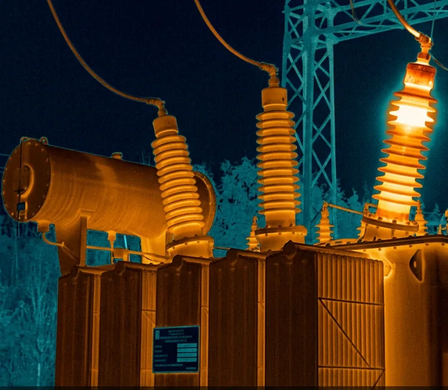
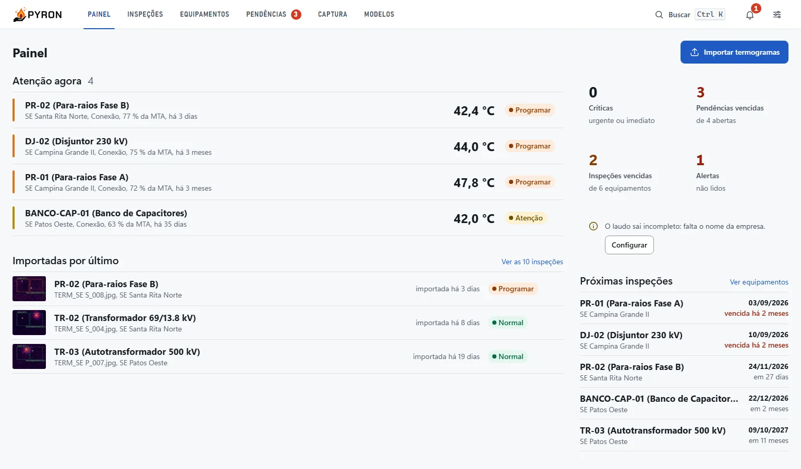
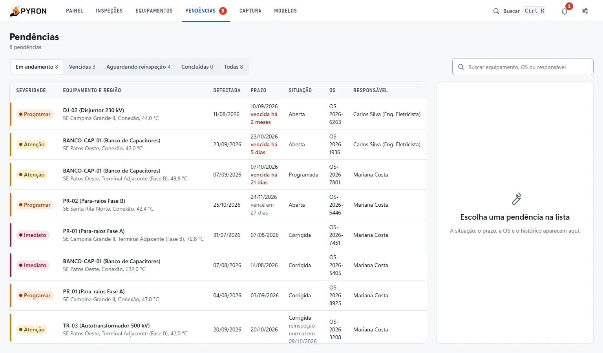
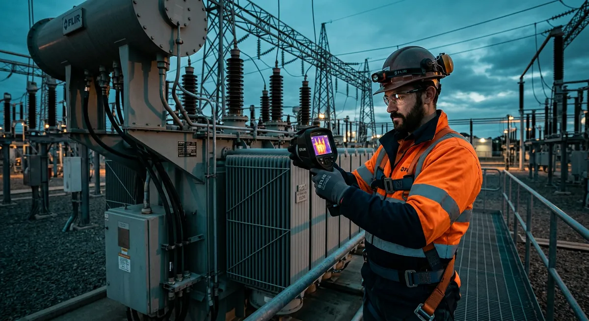

Engenheiro responsável CREA
Assina o laudo com nome e registro do cadastro (nunca digitado na hora), define o critério de severidade e acompanha os prazos.
O Pyron lê a temperatura de cada pixel do termograma, encontra conexões e buchas aquecidas, compara cada fase com as outras e com o limite do componente, e entrega o laudo pronto para a equipe de campo agir.
O teste roda aqui mesmo, sem instalar nada. O instalador sai na primeira versão pública.

O mesmo fluxo que a equipe já faz, sem planilha no meio e sem perder o histórico do equipamento.
Arraste os termogramas da câmera (FLIR e outras radiométricas), aponte uma pasta monitorada ou tire a foto pelo celular.
O modelo de visão encontra buchas, conexões e para-raios; a regra de pontos quentes acha o que o modelo não conhece.
Cada região é comparada com a fase igual e com a MTA, corrigida pela carga. Vale o pior critério.
Laudo em PDF assinado pelo engenheiro, pendência com prazo e OS para o técnico, alerta por WhatsApp.
Telas reais do Pyron. Leitura ampla, nada abaixo de 14 px, funciona no projetor da sala de manutenção e no notebook do campo.
Ao abrir, a equipe vê os equipamentos mais graves, as pendências vencidas e a agenda das próximas inspeções.


Cada anomalia vira uma pendência com prazo pela severidade, ordem de serviço e responsável. Quando a reinspeção sai normal, o Pyron sugere fechar.

Cadastre engenheiros e técnicos uma vez. O Pyron sabe quem assina o laudo e quem recebe a pendência.
Assina o laudo com nome e registro do cadastro (nunca digitado na hora), define o critério de severidade e acompanha os prazos.
Faz a inspeção, envia as fotos pelo celular, recebe a pendência com OS e prazo e marca a correção para a reinspeção.
As imagens da sua subestação não saem da empresa. O motor de análise carrega em poucos segundos e funciona sem internet, no escritório ou no notebook de campo.
A versão de teste mostra um termograma de buchas de transformador, a leitura de temperatura em cada ponto e a severidade calculada pela mesma regra do programa.
Conte o tamanho do parque e como a inspeção é feita hoje. Avisamos quando o instalador sair e combinamos um piloto com os seus termogramas.